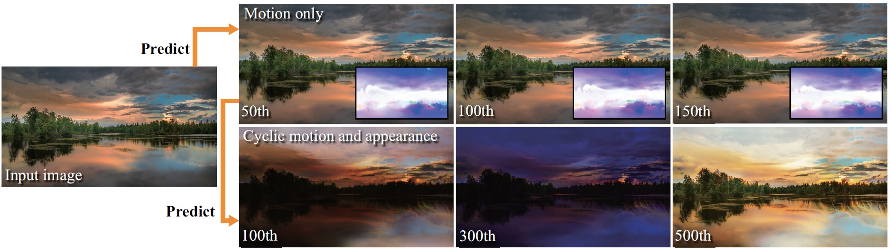

Yuki Endo†‡, Yoshihiro Kanamori†, Shigeru Kuriyama‡
†University of Tsukuba, ‡Toyohashi University of Technology
SIGGRAPH Asia 2019


[Japanese (under construction)]
Yuki Endo†‡, Yoshihiro Kanamori†, Shigeru Kuriyama‡
†University of Tsukuba, ‡Toyohashi University of Technology
SIGGRAPH Asia 2019
Automatic generation of a high-quality video from a single image remains a challenging task despite the recent advances in deep generative models. This paper proposes a method that can create a high-resolution, long-term animation using convolutional neural networks (CNNs) from a single landscape image where we mainly focus on skies and waters. Our key observation is that the motion (e.g., moving clouds) and appearance (e.g., time-varying colors in the sky) in natural scenes have different time scales. We thus learn them separately and predict them with decoupled control while handling future uncertainty in both predictions by introducing latent codes. Unlike previous methods that infer output frames directly, our CNNs predict spatially-smooth intermediate data, i.e., for motion, flow fields for warping, and for appearance, color transfer maps, via self-supervised learning, i.e., without explicitly-provided ground truth. These intermediate data are applied not to each previous output frame, but to the input image only once for each output frame. This design is crucial to alleviate error accumulation in long-term predictions, which is the essential problem in previous recurrent approaches. The output frames can be looped like cinemagraph, and also be controlled directly by specifying latent codes or indirectly via visual annotations. We demonstrate the effectiveness of our method through comparisons with the state-of-the-arts on video prediction as well as appearance manipulation.
Keywords: Single-image video synthesis; Time-lapse video; Convolutional neural networks; Optical flow prediction; Appearance manipulation
Last modified: Nov. 2020
[back]